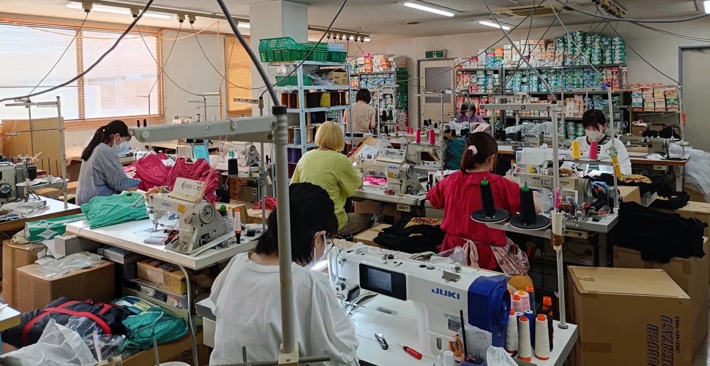
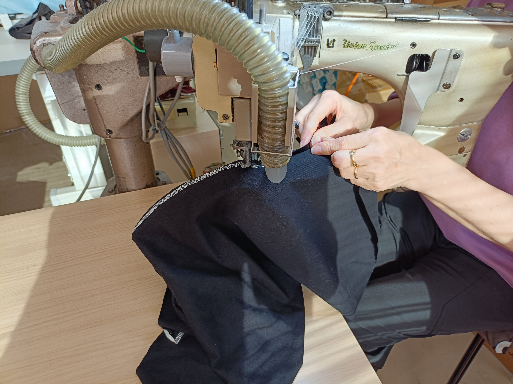
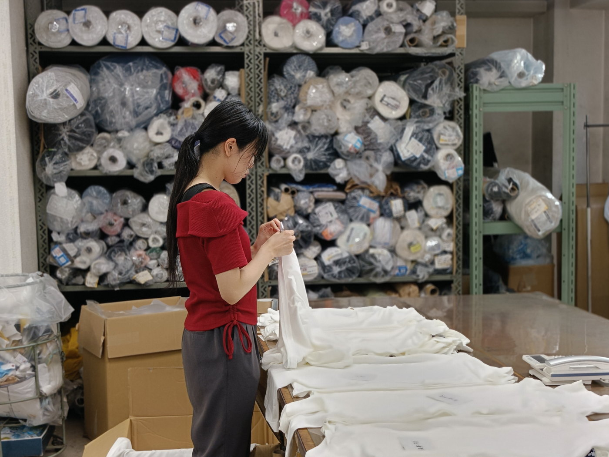
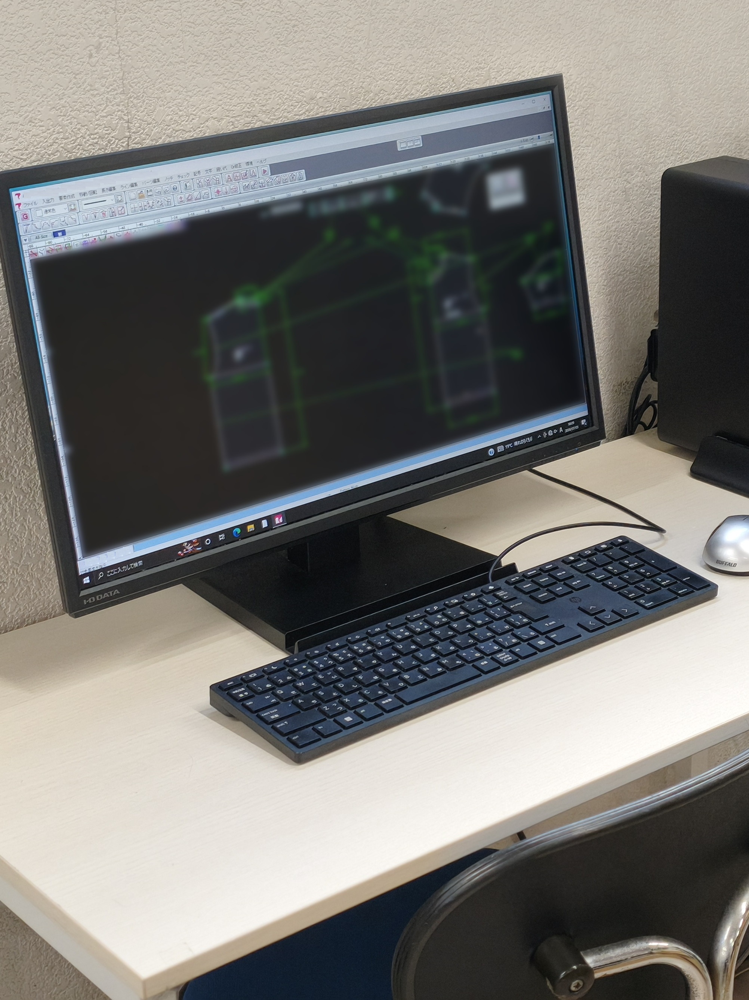

名古屋・中村区の縫製メーカー。
OEMで生地調達から縫製、特殊加工、
出荷まで社内で実施。

[ 写真 — 縫製現場 / 製品 縦位置 ]
作る 造る 創る
良い製品を作る 売れる物を造る 面白い物を創る 好きな物をつくる
合資会社 野口莫大小は1957年創業以来、名古屋でカットソーを縫い続けてきました。社内にパタンナーを抱え、 サンプルづくりから量産から特殊加工まで一貫して手がけます。
小ロットの試作にも、協力工場と組んだ大ロットの量産にも、 同じ目で品質を通す。 長く続けてきたからこそできる、現場の判断がここにあります。
企画から納品まで社内で一貫

[ 写真 — 特殊ミシン ]
[ 写真 — 検品 ]
[ 写真 — CAD ]